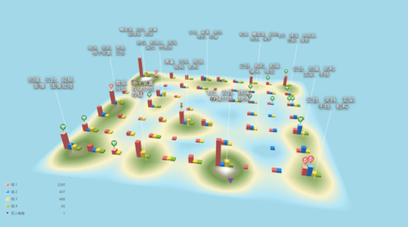
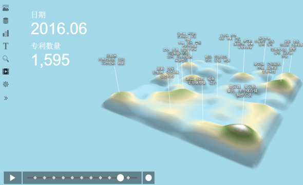

-
全球首个3D专利全景分析地图
3D全景分析地图基于智能化机器学习，利用文本聚类方法，根据专利的IPC分类号、标题、摘要等信息生成，可以帮助快速寻找大量看似无关的专利中的背后关系，将复杂的专利数据转换成有价值的信息。
最智能连接专利、技术与商业
最高效掌握竞争情报 洞察行业先机
最直观3D可视化图表 动画效果呈现
-
常规检索方式 VS 全景分析地图
常规检索遇到难题
在做技术研究时,需要对海量专利文献进行检索分析,工作量巨大 从专利检索、数据分析、制作图表到准备汇报材料,花费大量时间,分析结果的时效性无法保障 做专利对比分析,如比较相似专利、同一专利在不同年份时,遇到障碍
有了3D专利地图
更清楚更直接看到近几年哪些技术领域比较热门,哪些技术更新比较快 一旦所研究领域专利有新动向,地图讲动态更新呈现结果,专利数据每周更新一次,确保时效性
可以用动画形式帮您展示不同年份的技术发展对比情况
-
哪些场景下使用3D专利地图
竞争对手分析
了解对手在哪些领域做了技术布局
专利许可分析
寻找专利授权许可机会，快速锁定事宜的潜在合作伙伴
技术发展趋势分析
更清楚更直接看到近几年哪些技术领域比较热门，哪些技术更新比较快
防侵权分析
降低研发风险，清晰呈现任何潜在的障碍或者风险
验证研发可行性
输入研发想法，立即进行FTO检索，验证可行性
新领域市场分析
快速把握技术布局全貌，分析空白点，找研发方向
-
立体化呈现技术全景 - 3D地图
3D全景分析地图
支持大数据量（5w+件专利）即时分析
以3D形式呈现行业现有技术分布 展示竞争对手优劣领域
验证研发想法，规避侵权风险
-
支持动态演示，呈现技术演进过程
一般的专利地图呈现给用户的是一个静态的结果，用户无法直观判断技术发展过程，3D地图支持动画效果呈现，展示不同年份的技术发展对比情况。如下图中，用户可以自定义选择年份进行对比分析，不同年月里，山峰的聚集程度也会发生变化。
